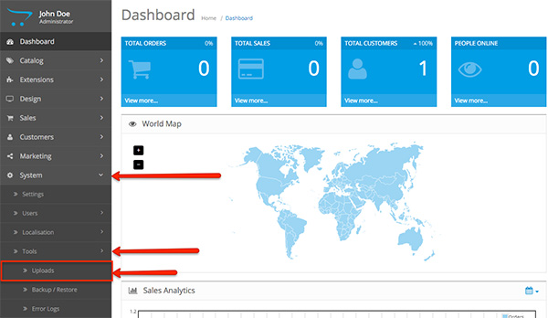
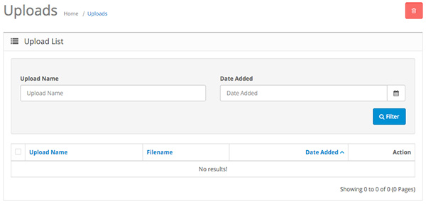

To access the Uploads section in your OpenCart admin panel, click on System > Tools > Uploads:

The field shows you all of the uploaded files you have in your OpenCart store. They can be images, PDF files, etc.
You have a filter button that sorts the uploaded files according to Upload Name and the date on which it has been added.

The Action button on the right side allows you to download the uploaded file from your OpenCart store. Respectively, the Delete button allows you to remove the selected file.